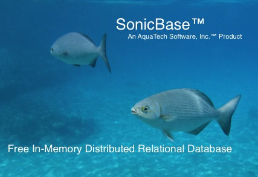

What is SonicBase?
SonicBase is an in-memory embedded, standalone or distributed streamable relational database. SonicBase allows you to store and retrieve records in a database with fast insert and retrieval speeds. You can use it for long-term storage and more short-term storage if you just want to do some temporary analysis of data. You may store anything from financial data to human resources data.Open Source Database
The open source project is hosted on SourceForge.
In-Memory Database
SonicBase stores all data in memory. It uses a mix of on-heap and off-heap memory. Additionally, disk-based snapshots and logs are used to achieve durability.Embedded, Standalone or Distributed Database
SonicBase can be embedded in your server. The embedded database can either be durable or in-memory only.SonicBase can be a standalone server. If you have a small database there is no need to distribute it across multiple servers.
SonicBase can be a distributed database. Records and indices are spread out across as many servers as you deem necessary. The data is transparently divided into shards and it is dynamically distributed as you add or delete records. You can scale SonicBase to billions of records on commodity servers. See the documented benchmarks for more details. SonicBase supports cross-shard transactions and cross-shard joins. This is not a simple task for a distributed database.
Relational Database
SonicBase is an RDBMS that supports the SQL syntax. SQL support is accessed via the JDBC driver.
Cross-Platform Database
SonicBase is a distributed relational database that is cross-platform, supporting Linux, Mac, Cygwin and Windows.Performance
With a 32 server, 4 billion record cluster with replication factor equals one we achieved 5.2 million batch inserts per second, 26 million batch identity reads per second and 68 million range-based lookups per second. With this distributed database you can achieve linear scalability. Being an in-memory database, Sonicbase can achieve impressive performance.Native Indices
We have introduced native indices into SonicBase. This allows all memory for the database to be stored outside the Java heap. This greatly improves the behaviour of the garbage collector as you can use a small heap setting.Automated Bulk Import
We have added the ability to automatically load your SonicBase database from another JDBC compliant database. This
will allow
you to quickly load SonicBase and do analytics on your data. Bulk import is available in the open source database.
See Automated Bulk Import Documentation.
Streaming Analytics
Streaming allows you to ingest data into the database and export it in real-time into external data stores. You could, for example, hook into a financial stream to provide up to the second quotes to your database. Analytics can then be performed on the data in SonicBase. Or perhaps you want to replicate your SonicBase database to an external data store. There are many possibilities. Streaming is high-performance real-time data transfer.Consumers
You can connect to Kafka, Amazon Web Services Kinesis, Amazon Web Services Simple Queue Service and custom streams
providers. The streaming
consumer can load your SonicBase
database in real-time, while you perform analytics functions on your SonicBase database. See Streaming Consumers.
Producers
You can hook Kafka, Amazon Web Services Kinesis, Amazon Web Services Simple Queue Service, Elasticsearch and custom streams
providers into SonicBase so that all inserts, updates and deletes will be published into your
streams. See Streaming Producers.
Stored Procedures
This in-memory database now supports stored procedures. You can run your Java code inside the SonicBase servers. With your
stored procedure
you can build or filter results before returning to the client. These powerful procedures can be used to greatly
enhance performance by avoiding sending data over the wire. See Stored
Procedures Overview for
more details.
Elasticsearch Integration
You can configure streaming to your Elasticsearch cluster. Inserts, updates and deletes are automatically managed.Logstash Integration
SonicBase logs may be streamed to your Logstash servers for advanced monitoring of the SonicBase cluster.
Like what you see or not? Please send us feedback.
Simply Worthy
©2018 - AquaTech Software™, Inc.